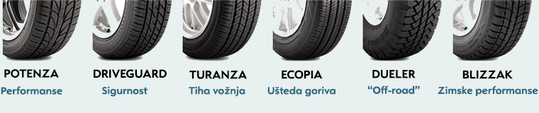

Bridgestone nudi jedinstven balans između stabilnosti na velikim brzinama, odličnog ponašanja u krivinama,
lakog upravljanja i izvrsnog prijanjanja. Bridgestone gume su prošle stroge testove na trkačkim stazama i na putevima.
Drugačiji ljudi očekuju drugačije performanse od svojih guma. Za neke, neverovatna ušteda goriva koju daje Ecopia su reper performanse gume. Za druge, udobna vožnja
po svim vremenskim uslovima koju dobijaju Turanza-om, su performanse koje očekuju. Za avaturiste ipak, glavni reper su performanse van druma koja omogućuje Dueler guma. Za entuziaste su neverovatna
stabilnost i prijanjanje kako na autoputu tako i na oštrim krivinama koju nudi već legendarna Potenza. Bez obzira kakve performanse oćekujete, Bridgston guma je konstruisana tako da daje najbolje
kada vam je najpotrebnije.

Firestone
Američki proizvođač pneumatika Firestone, osnovan je 1900. godine. Jedna od prvih kompanija koja je započela masovnu serijsku proizvodnju automobilskih pneumatika. Najprodavaniji auto na
svetu tog vremena, američki Ford T je izlazio iz fabrike sa Firestone pneumaticima. Kasnije, kompanija se širi u Kanadu, a 1926. otvaraju u to vreme najveću fabriku guma na svetu.
1928. Firestone pravi svoju prvu fabriku u Evropi, u Engleskoj. Najvažniji datum u novijoj istoriji kompanije predstavlja 1988. godina kada Firestone postaje deo Japanske korporacije Bridgestone.
Daytone
Tigar
Poslovno ime i zaštitni znak poznat širom sveta. Povezana sa gumarskom industrijom , ali sve više posvećena širenju svoje delatnosti i globalnom organizovanju.
Nudi kvalitetan proizvod koji odgovara standardima EU i SAD i ispunjava uslove Svetske banke i EU u oblasti zaštite životne sredine. Od sredine 2009. godine kompanija se nalazi u 100% vlasništvu
francuskog preduzeća
Mišelin(Michelin)